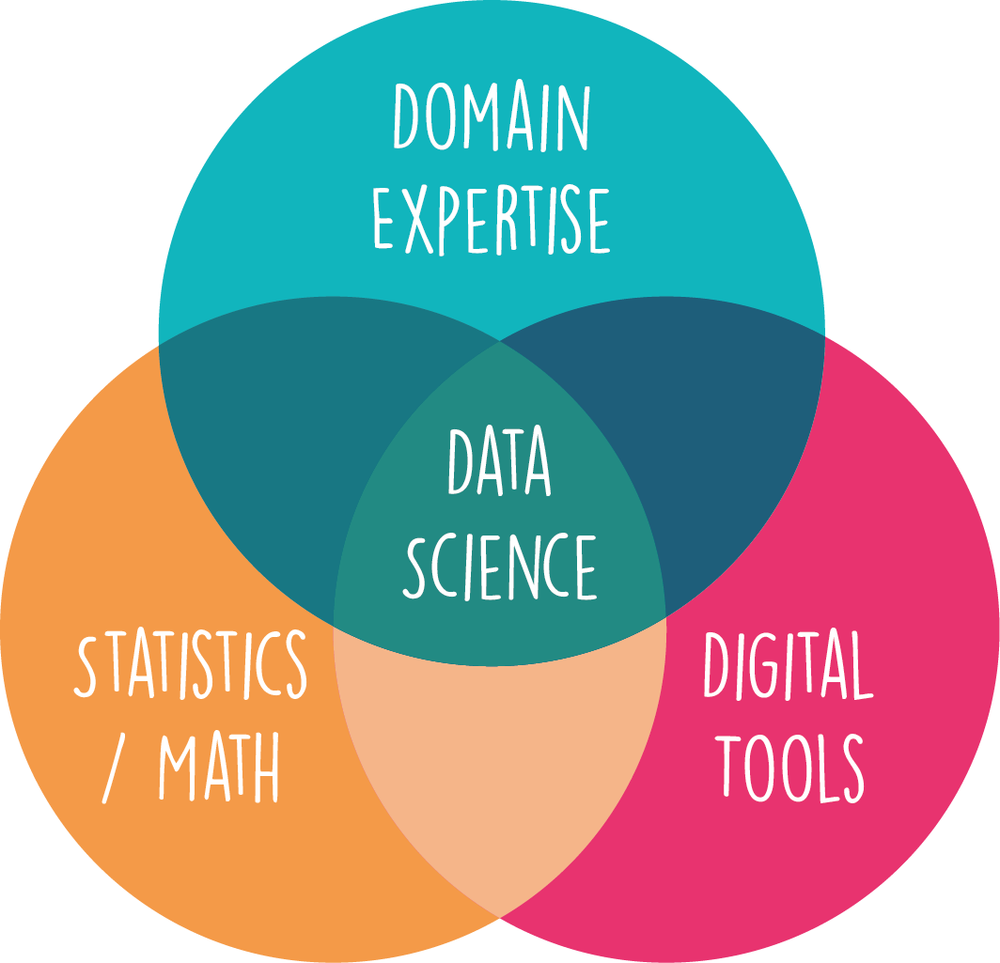

2. What is Data Science?#
Short answer, if we have to break it down to one sentence: Data Science ≈ “Gaining and communicating insights from complex data through digital techniques”.
Unlike mathematics, physics, or history, data science has just begun to become a discipline of its own. If you ask 10 practicing data scientists what data science is, you might get very different answers. Worse still, there’s not even a consensus on whether data science is a field of its own, a technical approach, a mindset, or just another word for statistics. We will see a bit more about the different perspectives and origins of what data science is or isn’t. But I want to start with the common basis. What is data science in general? I would answer that data science is essentially
the art of gaining and communicating insights from complex data through digital techniques.
Many quantitative scientists could also argue that they often do exactly this. They aim to learn new things about the world from data. And the use of digital tools is also clearly no longer a significant difference. However, this does not argue against a field called “Data Science,” but rather only says that many quantitative scientists nowadays are also to some extent data scientists. They even have to be if they want to keep up with the state of the art in their fields, as many research areas are currently undergoing rapid change due to the widespread adoption of new digital techniques such as machine learning approaches.
Beyond the short definition of data science mentioned, opinions on what data science exactly is, converge a bit. Frequently this simply depends on the respective application area. Data science in consulting and business often means something different than data science in a more academic environment. However, in most cases, everyone can at least agree on a Venn diagram that is very often used in introductions in this - or slightly modified - form: Data science as the intersection of Digital Techniques (digital tools/methods), Statistics, and Domain Expertise.
{kind=link}
Figure 1. Venn diagram to indicate the intersection of fields for data science.
2.1. Data is nothing new. So why now data science?#
Data has been a cornerstone of human understanding for millennia - from ancient civilizations keeping records of harvests and astronomy, to modern businesses tracking sales and performance. It’s clear that data in itself is not a new concept. However, the emergence and ascendancy of data science as a discipline is a relatively recent phenomenon. So, why now?
The prominence of data science in today’s world can be attributed to several concurrent developments:
(1) The exponential increase in the volume of data generated. Thanks to digitalization and the rise of the Internet, mobile devices, and IoT (Internet of Things), we are producing data at a previously unimaginable scale. This big data presents both a challenge and an opportunity - the challenge being how to handle and process this vast amount of information, and the opportunity being the valuable insights that can be gleaned from it.
This is accompanied by an increased recognition of the importance of data-driven decision-making across diverse sectors. Various industries, governments, and institutions have realized that leveraging the power of data can lead to increased efficiency, better decision-making, and a competitive advantage.
This existence (and appreciation) of larger and larger amounts of data can be seen as a substrate for the rise of data science, but it really needed a combination of several other developments to be able to properly work with such data (Fig. 2.1).
(2) The evolution and expansion of statistical methodologies have been a key driver. Statistics provide the foundational principles and techniques for analyzing data, making inferences, and predicting future trends. In the era of big data, classical and modern statistical techniques form the backbone of most analyses in data science. The relationship is actually so close that in the 1990s, statisticians like Jeff Wu even suggested renaming statistics to “Data Science”. Despite all overlap, both terms still exist and mean related but different things (see also [Hassani et al., 2021]).
(3) The strides we’ve made in data handling capabilities have greatly facilitated the rise of data science. This obviously includes the drastic advancements in computational power and storage capabilities that made it possible to collect, store, and analyze these massive datasets. But this also includes many developments from computer science, such as databases. Just a few decades ago, collecting, storing, and analyzing the vast amounts of data we deal with today would have been unimaginable, let alone impractical.
(4) There has been significant progress in the field of algorithms, which also includes machine learning. It is algorithms, which are at the heart of nearly every tool that we use as data scientists for understanding and interpreting data. This can range from optimization methods dating back more than 200 years (e.g., least square method) all the way to current deep learning approaches. These advancements have opened up new possibilities for predictive analytics, automation, and artificial intelligence.
(5) Lastly, the often-underestimated field of data visualization has seen revolutionary advancements. Effective data visualization makes complex data more comprehensible, accessible, and actionable. The development of powerful visualization tools enables us to present data in a visually compelling manner that fosters understanding and drives informed decisions.
So, while data is not new, the volume of data, our ability to process it, and the recognition of its value, are. These changes have given rise to the burgeoning field of data science, marking a new era in our relationship with data.
Fig. 2.1 The concurrent developments leading to Data Science [1].#
2.2. A brief spotlight: the many facets of Data Science#
Data science, by its very nature, stands at the bustling intersection of digital techniques, statistical methodologies, and domain expertise. It is a broad and incredibly diverse field with intricate links to many different sectors and disciplines. This diversity results in a wide variety of roles and responsibilities, each bringing unique skills and viewpoints to address an array of challenges and opportunities.
One of the key characteristics that makes data science so dynamic is its inherent multidisciplinarity. Data science isn’t just about dealing with numbers or coding—it’s about leveraging a suite of digital tools and statistical methods to draw insights from data, and applying these insights to a specific context or domain. A data scientist working in healthcare, for instance, might use different techniques and have a different focus than a data scientist working in retail or finance. The beauty of data science lies in this versatility—it is a field where myriad skills and disciplines converge and collaborate.
Given the breadth and depth of the field, being a successful data scientist often requires more than just technical skills. A natural curiosity to explore and understand data, an openness to new ideas and methods, the eagerness to continuously learn and adapt, and most crucially, the ability to communicate and collaborate effectively are all vital attributes. After all, data science is a team sport. No single person can master all facets of data science; instead, it’s about bringing diverse skills together, working with others, and learning from each other.
In the forthcoming pages, we aim to guide you through the multifaceted world of data science, shedding light on its various dimensions, the skills required, and the myriad ways in which data science can be applied. As you delve deeper into this exciting field, we hope to inspire you with the potential and the possibilities of data science and prepare you for a journey of continuous learning and discovery. Welcome to the exciting world of data science!